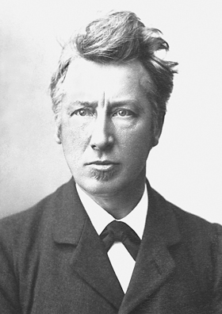

Nobelpriset
Nobelpriset i kemi delas ut årligen av Kungliga Vetenskapsakademien till naturvetare inom kemins olika områden. Det är ett av de fem nobelpris som etablerades genom Alfred Nobels testamente från 1895 och delas ut för enastående bidrag inom kemi, fysik, litteratur, fred och fysiologi eller medicin. Alfred Nobel specificerade att ett av prisen skulle gå till den som under det gångna året har gjort den viktigaste kemiska upptäckt eller förbättring
. Genom Nobels föreskrifter i testamentet administreras priset av Nobelstiftelsen och delas ut av Kungliga Vetenskapsakademien. Nominerings- och utredningsarbete sköts av akademiens Nobelkommitté för kemi som består av medlemmar som väljs av Kungliga Vetenskapsakademien.
Kemi var den viktigaste vetenskapen för Alfred Nobels eget arbete. Både utvecklingen av hans upptäckter och den industriella processen baserades på hans kemiska kunskaper. I hans testamente är kemipriset det andra som nämns.
Det första Nobelpriset i kemi delades ut 1901 till Jacobus Henricus van’t Hoff från Nederländerna för hans upptäckt av kemisk dynamik och osmotiskt tryck i lösningar
. Varje pristagare får en medalj, ett diplom och en penningsumma som varierat genom åren. År 1901 fick van’t Hoff 150 782 svenska kronor vilket är jämförbart med 7 731 000 kronor i december 2007. År 2008 gick priset till Osamu Shimomura, Martin Chalfie och Roger Y. Tsien, som delade på 10 000 000 kronor.